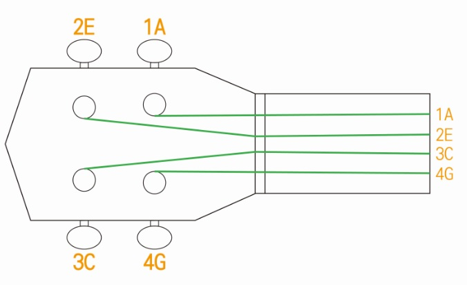
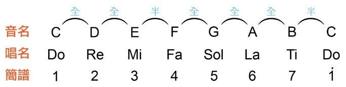
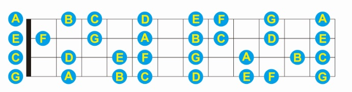
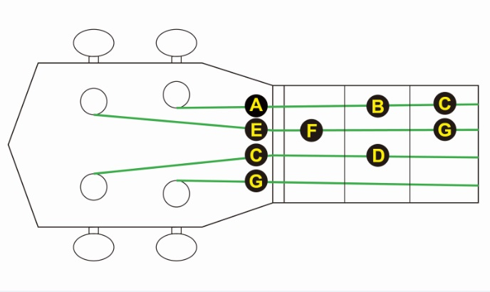
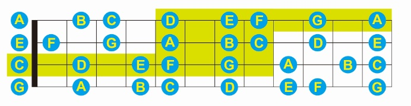

想要知道怎麼在烏克麗麗上彈 Do Re Mi
首先要知道每一條弦的空弦音
你只要會調音，就一定知道空弦音
空弦音

先從最細的開始
第四弦是 G
第三弦是 C
第二弦是 E
第一弦是 A
音程
再來還要知道音與音之間的距離
就是 全全半全全全半

指板上的每個音格都是一個半音
半音 + 半音 = 全音
所以兩格是一個全音
推算指板上的音
我們知道第一弦空弦音是 A
也知道 A 跟 B 之間的距離是一個 全音
一個全音又等於 兩格
所以 B 就會在第一弦 第二格
再來
B 和 C 距離一個半音 (一格) => C 在第三格
C 和 D 距離一個全音 (兩格) => D 在第五格
D 和 E 距離一個全音 (兩格) => E 在第七格
E 和 F 距離一個半音 (一格) => F 在第八格
F 和 G 距離一個全音 (兩格) => G 在第十格
G 和 A 距離一個全音 (兩格) => A 在第十二格
以此類推，你就能知道指板上所有的音

Do Re Mi
通常我們彈 DO RE MI 不會只彈同一條弦
因為手要一直橫移很麻煩
所以我們會換一條弦

食指負責第一格
中指負責第二格
無名指負責第三格
Do是第三弦空弦音Re是中指按第三弦第二格Mi是第二弦空弦音Fa是食指按第二弦第一格Sol是無名指按第二弦第三格La是第一弦空弦音Ti是中指按第一弦第二格Do是無名指按第一弦第三格
高把位 Do Re Mi
很多歌都會超過一個八度 (低音 Do 到 高音 Do)
但烏克麗麗的結構的限制
比較沒辦法彈出低音，解決的方法有:
- 換 Low G 弦
- 移調
- 移動你的手
前兩個對初學者可能有點難
所以我介紹第三個
首先把剛在指板上推算的音拿出來
然後上個色

綠色的範圍就是 低音 C 到 高音 A 囉~